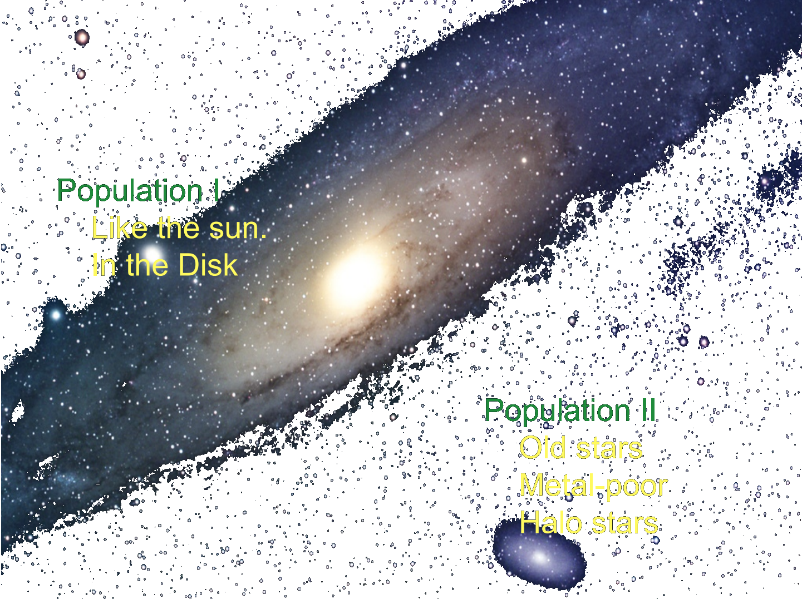
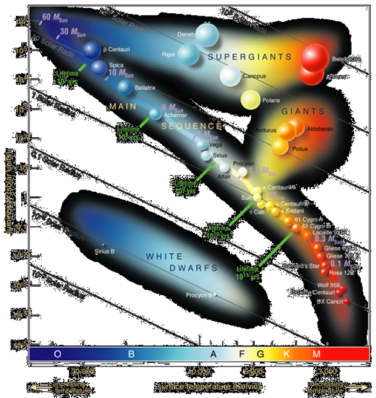

Lecture 3 – Origin of Carbon and Water on Earth
Periodic Table of Elements
- ~ 100 elements in nature
- ~ 300 isotopes
- How many of each are there?
- And why these distributions?
- Where do they come from?
Alpher-Bethe-Gamow 1948
All elements formed 5 min after Big Bang from Ylem = primordial soup
-
Problems for Gamow & Co.:
- Time evolution (pop II and pop I) 
- Only H og He in the beginning
- Stars must play a role
- Not enough time in Big Bang
- Mass numbers 5 and 8 stumble blocks
Stellar physics : HR-diagram
(Credits:ESO)
The content below shows how to use an interactive Python program to plot the HR diagram (also known as the Hertzsprung–Russell, the temperature-luminosity diagram of stellar evolution).
import numpy as np
import matplotlib
import matplotlib.pyplot as plt
from matplotlib.ticker import MultipleLocator, FormatStrFormatter, AutoMinorLocator
import math
# Solar parameters
L_sun = 3.83 * 10**26 # J/s
R_sun = 6.96 * 10**8 # meter
T_sun = 5780. # Kelvin
rotated_labels = []
def text_slope_match_line(text, x, y, line):
global rotated_labels
xdata, ydata = line.get_data()
x1 = xdata[0]
x2 = xdata[-1]
y1 = ydata[0]
y2 = ydata[-1]
rotated_labels.append({"text": text, "line": line, "p1": np.array((x1, y1)), "p2": np.array((x2, y2))})
def update_text_slopes(ax):
global rotated_labels
for label in rotated_labels:
text, line = label["text"], label["line"]
p1, p2 = label["p1"], label["p2"]
sp1 = ax.transData.transform_point(p1)
sp2 = ax.transData.transform_point(p2)
rise = (sp2[1] - sp1[1])
run = (sp2[0] - sp1[0])
slope_degrees = math.degrees(math.atan(rise / run))
text.set_rotation(slope_degrees)
def HRD(ADDSTAR, Temperature, Luminosity):
cm = plt.cm.get_cmap('coolwarm_r') # reversed colormap
ax.scatter(xhr, yhr, c=xhr, cmap=cm, s=zhr, zorder=2, alpha=0.8)
if ADDSTAR == 'yes':
thestar = ax.scatter(Temperature, Luminosity, color='lightseagreen', lw=2, s=500,
marker='*', facecolor='none', zorder=3)
return thestar
# Read the star data extracted with online plot digitizer.
HRstars = np.genfromtxt('HRstars.csv', delimiter=',')
xhr = HRstars[:, 0]
yhr = HRstars[:, 1]
zhr = (np.array(yhr) / (np.array(xhr) / T_sun)**4)**0.25
zhr = 12 * zhr / min(zhr)
# Read the Sun evolution data
SunEvoldata = np.genfromtxt('SunEvol.csv', delimiter=',')
xse = SunEvoldata[:, 0]
yse = SunEvoldata[:, 1]
MainStagedata = np.genfromtxt('MainStage.csv', delimiter=',')
xms = MainStagedata[:, 0]
yms = MainStagedata[:, 1]
# Generate constant radii lines
R = np.array([0.001, 0.01, 0.1, 1., 10., 100., 1000.])
T = np.linspace(1000., 50000., num=50)
xloc = np.array([48000, 48000, 48000, 48000, 48000, 28000, 8000])
yloc = (xloc / T_sun)**4 * R**2
fig = plt.figure(figsize=(12, 8), dpi=300)
ax = plt.gca()
fig.patch.set_facecolor('none')
# Constant radius lines
for i in range(len(R)):
L = (T / T_sun)**4 * R[i]**2
greyline, = ax.plot(T, L, '--', c='silver', lw=0.8, zorder=1)
t = ax.annotate(str(R[i]) + '$R_{\odot}$', xy=(xloc[i], yloc[i]), xytext=(12, 0),
textcoords='offset points', ha='left', va='center_baseline',
color='#d6ebff')
text_slope_match_line(t, 40000, L[-1], greyline)
cm = plt.cm.get_cmap('coolwarm_r') # Inversed color bar
sc = ax.scatter(xhr, yhr, c=xhr, cmap=cm, s=zhr, zorder=2, alpha=0.8)
cbar = plt.colorbar(sc, ax=ax)
cbar.set_label('Temperature (K)', color='#d6ebff')
cbar.ax.yaxis.set_tick_params(color='#d6ebff')
plt.setp(cbar.ax.get_yticklabels(), color='#d6ebff')
for spine in cbar.ax.spines.values():
spine.set_edgecolor('#d6ebff')
ax.set_facecolor('none')
ax.tick_params(axis='both', which='both', colors='#d6ebff')
ax.xaxis.label.set_color('#d6ebff')
ax.yaxis.label.set_color('#d6ebff')
ax.title.set_color('#d6ebff')
for spine in ax.spines.values():
spine.set_color('#d6ebff')
ax.set_xlim(2000, 50000)
ax.set_ylim(1e-5, 1e7)
ax.invert_xaxis()
ax.set_xscale('log')
ax.set_yscale('log')
ax.set_xlabel(r'$Temperature\ (K)$')
ax.set_ylabel(r'$Luminosity\ (L/L_{\odot})$')
ax.set_title('HR Diagram')
update_text_slopes(ax)
plt.show()What about the earth?
- Why is there so little carbon in the earth’s crust?
- Does the carbon in the earth’s crust have the same origen as that of water?
- Is this origen known (comets or asteroids or something else)?
What about water?
There are competing theories about the origin of water on Earth:- Late heavy bombardment 3.9 Gyr ago
- Comets?
- Asteroids?
- Or was water there from the beginning hiding in minerals?
- Are planets like the earth (habital zone, with water) the result of freak accidents?
Bottom line
- Oxygen, carbon, hydrogen are some of the most abundant elements in the Universe and in the Sun.
- However, the newly formed Earth most likely had no water and hardly any carbon – at least in the crust.
- Water and carbon most likely arrived after the formation of the Earth, maybe during the “late heavy bombardment” with an influx of minor bodies from further out in the Solar system (asteroids and/or comets).